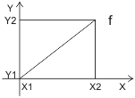

VAV 设定点（AO - 子系统特定扩展）
模拟输出 (AO) 对象支持子系统特定扩展的以下属性VAV setpoint.
✳ 表示西门子专有财产。
Main data configuration ✳ |
|
| |
|---|---|---|---|
"Main data configuration“控制执行器校准数据的处理”Control action“，”Differential pressure adjustment to nominal air volume flow“（Vn）和”Nominal flow". | |||
System | 执行器中的校准参数会被离线或在线工程数据覆盖。 | ||
Field device | 在线工程数据被从执行器读回的校准参数覆盖。一旦参数成功读回一次，“Main data configuration“自动更改为”System". | ||
Enable angle adaptation ✳ |
|
| |
|---|---|---|---|
"Enable angle adaptation" 定义如何将开度角度映射到 0...100 [%] 开度范围。 如果使用阻尼器开度范围不是 0..90° 的 VAV 盒子，则需要进行角度调整。 | |||
No | 0..100 [%] 映射到 0..90° | ||
是的 | 执行器确定启动期间的实际打开角度。然后将实际范围（例如 15...75°）映射到 0..100 [%] 定位信号。 | ||
Control action |
|
| |
|---|---|---|---|
"Control action" 定义上升和下降命令的逻辑。 | |||
直接的 | 正常逻辑：针对 0 到 100 % 的命令打开。 | ||
撤销 | 反转逻辑：对于 0 到 100 % 的命令关闭。例如，可用于将阀门旋转与执行器的安装位置相匹配。 | ||
财产ID：4988 | |||
Differential pressure adjustment to nominal air volume flow ✳ |
|
|
|---|---|---|
"Differential pressure adjustment to nominal air volume flow" 允许调整 VAV 盒的标称压差并校准体积流量测量。 "Differential pressure adjustment to nominal air volume flow" 表示根据以下公式缩放至 100% 空气流量的 Delta 压力： 范围：0.77...3.16 | ||
Process value 1和Process value 2 ✳ |
|
|
|---|---|---|
"Process value 1“（X1），”Process value 2“（X2），”Output level 1“（Y1）和”Output level 2" (Y2) 用于计算线性函数 (f)。需要线性函数来计算过程值的输出电平。
范围：-3.40282204661662 E+38...3.40282204661662 E+38 [%] | ||

Output level 1和Output level 2 ✳ |
|
|
|---|---|---|
"Process value 1“（X1），”Process value 2“（X2），”Output level 1“（Y1）和”Output level 2" (Y2) 用于计算线性函数 (f)。需要线性函数来计算过程值的输出电平。  范围：0...最大值 单元： [％] | ||
Uploaded nominal flow ✳ |
|
|
|---|---|---|
"Uploaded nominal flow“（只读）显示从执行器上传的最后一个值（请参阅“Main data configuration”）。 | ||
Uploaded control action ✳ |
|
|
|---|---|---|
"Uploaded control action“（只读）显示从执行器上传的最后一个值（请参阅“Main data configuration”）。 | ||
Uploaded differential pressure adjustment to nominal air volume flow ✳ |
|
|
|---|---|---|
"Uploaded differential pressure adjustment to nominal air volume flow“（只读）显示从执行器上传的最后一个值（请参阅“Main data configuration”）。 | ||